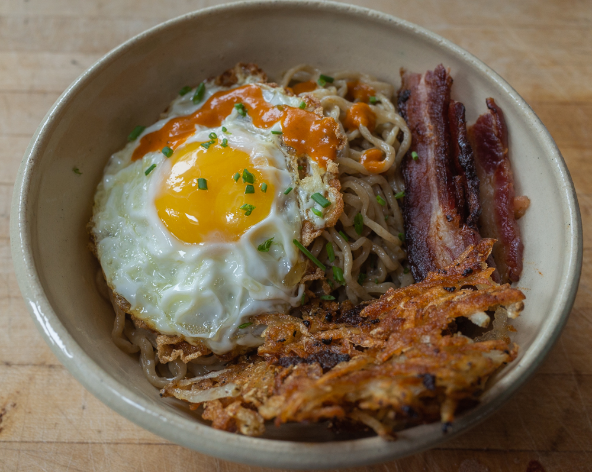

Scuffed Breakfast

Description
The signature scuffed breakfast is a meal that
is really easy and cheap to make
but not the healthiest or most nutritious meal
that you could have.
Ingredients
- 1 pack of ramen
- 2 eggs
- 1 hashbrown patty
Steps
- Set water to a boil
- Add in your ramen and cover your container for 5 minutes
- Add 2 eggs into a greased pan and cook them over easy
- Put your hashbrown into the air fryer or oven at 400
degrees for 15 minutes (flip halfway)
- Stir your ramen and drain the water
- Add 1 egg onto your plate
- Add the cooked ramen on top of your egg
- Add the second egg on top of the ramen
- Take out your hashbrown and add it to the plate
- Enjoy your meal!